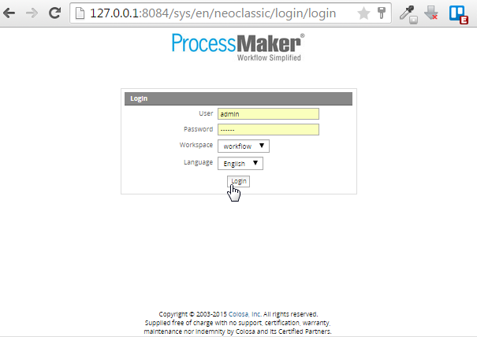
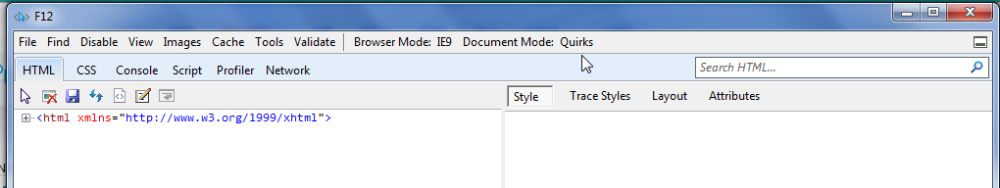
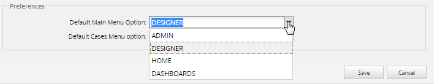
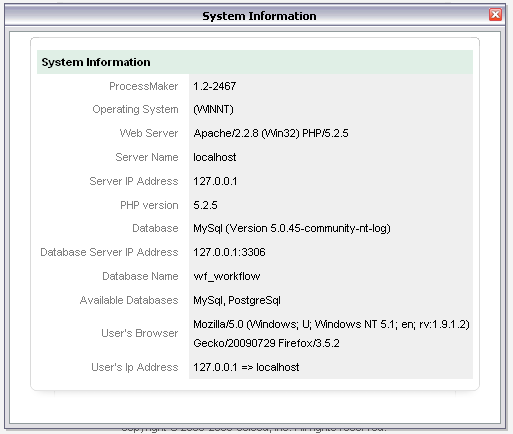
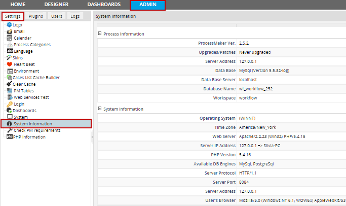

Overview
Users can log into ProcessMaker from a standard web browser by entering the IP address of the server where ProcessMaker is installed:
-
http://<IP-ADDRESS>:<PORT>
If running ProcessMaker from the local machine, use:
-
http://localhost
If not running ProcessMaker from the default port 80, also specify the port number. For instance, if running ProcessMaker at the IP address 192.168.2.100 from the port 8080, then enter:
-
http://192.168.2.100:8080
If only the IP address (or domain name) is included in the URL, the web browser will automatically redirect to the ProcessMaker login screen at:
-
http://<IP-ADDRESS>:<PORT>/sys/en/classic/login/login.html
(To make ProcessMaker redirect to a different URL, see Changing the Default Language.)
Enter a username and password. If the workspace was not included in the URL, also select the workspace, which by default is "workflow". The language can also be selected, if additional languages have been installed.

Note: If you log into ProcessMaker using Internet Explorer (any version before 5) probably you will notice that the logo is aligned to the left hand side as the image below:

This is an issue of the Internet Explorer mode since "Document Mode" has set with quirk configuration. Basically, ProcessMaker only supports quirk mode; for instance, if you go to developer tools inside your browser (you can go in by pressing F12 key) you will see at the top of the window that Quirk mode configuration is set in Document mode.

If you change this configuration to an standard you will see that the logo will move to the center of the screen, but this only works with the Internet Explorer Developer Tool.
Login after Installation
If ProcessMaker was just installed and logging in for the first time, enter the following credentials to login as the administrator:
- User: admin
- Password: admin
- Workspace: workflow
Once logged in as the "admin" user, create new users in ProcessMaker.
During your first login, be sure to change the admin's password for greater security.
Once users have been created, they will be able to login with their own usernames and passwords. To customize what types of passwords can be used, see Customizing Authentication.
Note: Since ProcessMaker 2.0.10 and later, is not possible to create usernames that start with a number like "01Patricia". The name must be start with either a letter or underscore. ProcessMaker doesn't recognize usernames which start with a number.
Selecting Workspaces, Languages and Skins
The login URL can be customized by the user to automatically select the workspace, language and skin used by ProcessMaker:
-
http://<IP-ADDRESS:<PORT>/sys<WORKSPACE>/<LANGUAGE>/<SKIN>/login/login.html
If the workspace isn't specified in the login URL, then it will have to be selected at each login. The default workspace is "workflow", but other workspaces can be defined to divide up processes into more logical groupings. For more information, see Workspaces.
The user can select an available interface language from a dropdown box when logging in (as long as the PO translation file for that language has already been imported into ProcessMaker). The language can also be specified as a 2 letter 639-1 ISO language code in the login URL. See Adding Languages to ProcessMaker for more information.
Using a Different Skin
The visual appearance of ProcessMaker can be changed by specifying a skin in the login URL. Only the "classic" skin is available by default, but new skins can be created. See ProcessMaker Skins for more information.
For instance, if using ProcessMaker in French with the "company" skin on the "accounting" workspace at the address 192.168.1.50, then login at:
-
http://192.168.1.50/sysaccounting/fr/company/login/login.html
Changing the Destination after Login
After logging in, users with the PROCESSMAKER_OPERATOR and the PROCESSMAKER_MANAGER roles are directed by default to the HOME menu in order to displays a list of the user's cases, which is located at the address:
-
http://<IP-ADDRESS:<PORT>/sys<WORKSPACE>/<LANGUAGE>/<SKIN>/cases/main
Users with the PROCESSMAKER_ADMIN role or the PM_FACTORY permission in their role are directed by default to the DESIGNER menu after logging in, which is located at the address:
-
http://<IP-ADDRESS:<PORT>/sys<WORKSPACE>/<LANGUAGE>/<SKIN>/processes/main
Each user who has the PM_EDITPERSONALINFO permission in his/her role can customize where ProcessMaker directs the web browser after login. After logging in, click on the username in parenthesis in the upper right-hand corner to see the user's profile.

Then click on the Edit link in the lower right-hand corner to change that profile. In the Preferences section, select which menu should be default menu in the Default Main Menu Optiondropdown box. Under the HOME menu, the list of cases in the Inbox are displayed by default. To change which option is selected by default in the Cases sidebar, select from the Default Cases Menu Option dropdown box.

The destination after login can also be changed by specifying the address of the next screen in the login URL:
-
http://<IP-ADDRESS:<PORT>/sys<WORKSPACE>/<LANGUAGE>/<SKIN>/login/login?u=<NEXT-ADDRESS>
Do not include the IP address in <NEXT-ADDRESS> and make sure that the address begins with a / (slash).
For example, if wanting to go directly to the ADMIN menu after login to the ProcessMaker server in the example above:
http://192.168.1.50/sysaccounting/fr/company/login/login.html?u=/sysaccounting/fr/company/setup/main
Changing Destination after Logout
After logout, ProcessMaker users are directed by default to:
http://<IP-ADDRESS:<PORT>/sys<WORKSPACE>/<LANGUAGE>/<SKIN>/login/login
Usually, users want to be redirected to the complete URL where they will be able to choose its workspace, to modify this, open skinEngine.php file located at:
<INSTALL-DIRECTORY>/workflow/engine/skinEngine/
It is recommended to use a plain text editor, such as: Notepad++ or UltraEdit, both of them have code lines, so the following code has to be changed on Line 397 and Line 660:
$logout = '/sys' . SYS_SYS . '/' . SYS_LANG . '/' . SYS_SKIN . '/login/login';
}
else {
$logout = '/sys/' . SYS_LANG . '/' . SYS_SKIN . '/login/login';
}
In the URL is defined system variables, which can be change or removed depending on the user needs.
On the above example, if the workspace is defined it will redirect to logout page where workspace is defined in the URL, so you don't need to re-type the workspace again, otherwise it will redirect to logout where workspace is not defined. It is possible to change not only.
Note: These changes can not be applied on uxmodern skin.
Obtaining System Information
A System Information link will appear at the bottom of the login screen to provide information about the configuration of the system and the version of ProcessMaker. If the workspace is specified in the login URL, then information will be provided about the database as well.

If for some reason the System Information is not displaying on the login screen and it requires to check ProcessMaker version, go to the folder login located at:
Open version-pmos.php file it will have the following content:
From version 2.5, System Information was moved from the Login Screen to the Admin tab, so only users with PROCESSMAKER_ADMIN and PROCESSMAKER_MANAGER role will have access to the email log.:

Customizing the Login Screen
ProcessMaker's Login Screen can be customized. For example, to remove the System Information link from the bottom of the screen for security reasons or change the message at the bottom of the screen, edit the source code in the file:
<INSTALL-DIRECTORY>/workflow/engine/skinEngine/skinEngine.php
Change the content of the $footer variable, which is defined differently depending upon the system on lines 170-178, 318-322, and 407-416:
$footer = "<a href=\"#\" onclick=\"openInfoPanel();return false;\" class=\"FooterLink\">| System Information |</a><br />";
}
$freeOfChargeText = "";
if (! defined('SKIP_FREE_OF_CHARGE_TEXT'))
$freeOfChargeText = "Supplied free of charge with no support, certification, warranty, <br>maintenance nor indemnity by Colosa and its Certified Partners.";
$footer .= "<br />Copyright © 2003-" . date('Y') . " <a href=\"http://www.colosa.com\" alt=\"Colosa, Inc.\" target=\"_blank\">Colosa, Inc.</a> All rights reserved.<br /> $freeOfChargeText " . "<br><br/><a href=\"http://www.processmaker.com\" alt=\"Powered by ProcessMaker - Open Source Workflow & Business Process Management (BPM) Management Software\" title=\"Powered by ProcessMaker\" target=\"_blank\"><img src=\"/images/PowerdbyProcessMaker.png\" border=\"0\" /></a>";
For example, to eliminate the System Information link, just comment out the text:
$footer = ''; //"<a href=\"#\" onclick=\"openInfoPanel();return false;\" class=\"FooterLink\">| System Information |</a><br />";
}
Each time ProcessMaker is upgraded, these changes will be overwritten, so the edits will have to be reapplied after each upgrade.
For recent versions of ProcessMaker edit the db.php file, located at:
- <INSTALL-DIRECTORY>/shared/sites/you_workspace/db.php
And add the following line:
If you want to hide all footer open the layout.html file, located at:
<INSTALL-DIRECTORY>/workflow/engine/skinEngine/base/layout.html
Add <tt>style="display:none;" inside class as follows:
<div class="content" style="display:none;" >{$footer}</div>
</div>
For both modifications it is not necessary to restart the server.
Altering Login Session Time
By default, a login session will automatically logout after 24 minutes of inactivity. The length of the login session can be altered by editing the php.ini file and changing the following line:
Note that the time is in seconds, so for a 40 minute session: 40 x 60 = 2400
Then, restart the Apache server for the new changes to take effect.
Note: If using ProcessMaker on public computers used by many people, it is recommended to always click on Logout in order to terminate login sessions. However, users may forget to click on Logout, so it is also recommended to shorten the session time so there is less risk that a subsequent user of the computer can enter the user's ProcessMaker account with an old session.
Login Records
Every time a user logins to ProcessMaker, a record is kept in the wf_<WORKSPACE>.LOGIN_LOG table in the database, which contains the following fields:
- LOG_UID: A unique ID to identify the login session.
- LOG_STATUS: The status of the login session which can be "ACTIVE" or "CLOSED". If set to "CLOSED", the user ended the login session by clicking on Logout. If set to "ACTIVE", the login session may still be open, but it also might have expired due to inactivity.
- LOG_IP: The IP address of the user's computer. If logging in on the same computer where ProcessMaker is installed, then this will be set to "127.0.0.1".
- LOG_SID: The session ID that PHP uses to uniquely identify the session. It is 26 characters long and consists of lowercase letters and numbers.
- LOG_INIT_DATE: The datetime when the login session started in "YYYY-MM-DD HH:MM:SS" format.
- LOG_END_DATE: The datetime when the login session was closed in "YYYY-MM-DD HH:MM:SS" format. This field will only be set if the user clicks on the Logout link. If the login session is still open or it has expired due to inactivity, then it will be set to NULL.
- LOG_CLIENT_HOSTNAME: The IP address (and port number) of the ProcessMaker server.
- USR_UID: The unique ID of the user who logged in.
If needing to generate reports about user logins, the wf_<WORKSPACE>.LOGIN_LOG table can be queried with SQL in DynaForm fields, executeQuery() in Triggers, or external reporting tools, such as Jasper Reports, Pentaho Reporting, Crystal Reports, etc.